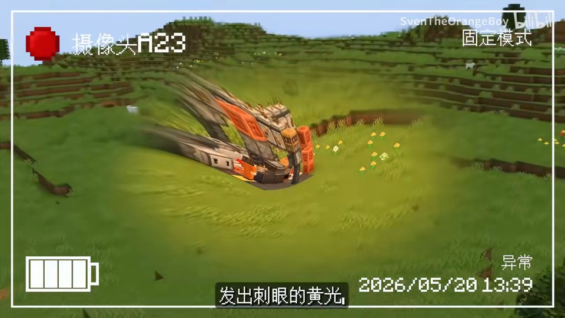

<!doctype html><html lang="zh-CN"><meta charset="utf-8"><meta name="viewport" content="width=device-width,initial-scale=1"><title>地球 / 空间扭曲观察实验</title>
<style>
*{box-sizing:border-box}body{margin:0;background:#11150f;color:#e5e8d9;font-family:'Microsoft YaHei',sans-serif}header{height:84px;padding:18px 30px;display:flex;justify-content:space-between;align-items:center;border-bottom:1px solid #3b4132}h1{font-size:24px;margin:0;letter-spacing:5px}small,.mono{font-family:Consolas,monospace;font-size:11px;letter-spacing:2px;color:#9ca58a}header span{color:#d8e958}main{display:grid;grid-template-columns:1fr 310px;height:calc(100dvh - 84px);min-height:600px}.view{position:relative;overflow:hidden;background:#788a64}canvas{display:block;width:100%;height:100%;touch-action:none;cursor:grab}.frame{position:absolute;inset:24px;border:1px solid #ffffff55;pointer-events:none}.tag{position:absolute;top:42px;left:43px;display:flex;gap:10px;align-items:center;text-shadow:0 2px 5px #000}.dot{width:10px;height:10px;background:#d5ed53;box-shadow:0 0 15px #d5ed53}.bottom{position:absolute;bottom:42px;left:43px;right:43px;display:flex;justify-content:space-between;font-size:12px;text-shadow:0 1px 5px #000}.stamp{position:absolute;right:43px;top:43px;text-align:right;font-family:Consolas,monospace}.stamp b{font-size:32px;display:block;font-weight:400}.panel{padding:28px 24px;overflow:auto;border-left:1px solid #3b4132}.eyebrow{color:#d8e958;font-size:11px;letter-spacing:3px}h2{font-size:26px;font-weight:500;margin:10px 0 12px}p{font-size:13px;line-height:1.9;color:#aeb6a0}.control{padding:24px 0;border-top:1px solid #343c2c}label{display:flex;justify-content:space-between;font-size:13px;margin-bottom:16px}input{width:100%;accent-color:#d8e958;cursor:pointer}button{font:inherit;cursor:pointer;color:#e3e7d8;background:#232b1b;border:1px solid #4d5a38;padding:11px 9px}button:hover{background:#35432a}button:focus-visible,input:focus-visible{outline:2px solid #e5f178;outline-offset:3px}.buttons{display:grid;grid-template-columns:1fr 1fr;gap:8px}.primary{background:#d8e958;color:#17200b;border-color:#d8e958}.wide{width:100%;margin-bottom:9px}.ref{width:100%;display:block;margin:12px 0;border:1px solid #52613c}summary{font-size:13px;cursor:pointer}.legend{display:flex;gap:8px;align-items:center;margin-top:20px;color:#8e9a7c;font-size:11px}.line{width:22px;height:1px;background:#d8e958}@media(max-width:800px){main{display:flex;flex-direction:column;height:auto}.view{height:65dvh;min-height:400px}.panel{border-left:0}header{padding:15px}header .mono{display:none}.frame{inset:15px}.tag{left:28px;top:30px}.stamp{right:28px;top:30px}.bottom{left:28px;right:28px;bottom:30px}}
</style>
<header><div><small>ANOMALY ARCHIVES / VISUAL STUDY 008</small><h1>地球<span> · </span>空间扭曲</h1></div><div class="mono">REFERENCE STUDY — WEB PROTOTYPE</div></header>
<main><section class="view" aria-label="可拖动旋转的空间扭曲三维场景"><canvas id="scene"></canvas><div class="frame"></div><div class="tag"><i class="dot"></i><span id="status">未被回溯 / 灾变推演</span></div><div class="stamp"><small>FIELD INTENSITY</small><b id="readout">85%</b></div><div class="bottom"><span>拖动旋转 · 滚轮远近</span><span id="cameraLabel">CAM A23 / 远景</span></div></section>
<aside class="panel"><div class="eyebrow">命名实验 / EARTH</div><h2>扭曲。然后，引爆。</h2><p>世界级范围：扭曲 / 吸引半径 256 格，保留视觉扭曲与引力，爆炸前不挖坑，爆炸时形成半径 128 格、中心深约 72 格的大坑；黑白冲击帧切入，随后向外抛射碎块。网页压缩为 30 秒演示；游戏内保留引力与爆炸伤害。</p><div class="control"><label for="strength">灾变进度 <span id="value">85%</span></label><input id="strength" type="range" min="0" max="400" value="85"><label for="glow" style="margin-top:22px">中心黄光 <span id="glowValue">55%</span></label><input id="glow" type="range" min="0" max="100" value="55"></div><div class="control"><button class="primary wide" id="play">播放：未被回溯的全过程</button><div class="buttons"><button id="rewind">唱片回溯</button><button id="reset">恢复正常</button></div><div class="buttons" style="margin-top:9px"><button id="far">远景观察</button><button id="near">靠近兔子</button></div></div><details><summary>对照原片 · 约 7:18</summary><p>原片截图用于对照。上方是可旋转的效果草案，非游戏实录；尚未改动模组。</p></details><div class="legend"><span class="line"></span>向心坍陷 + 局部模糊 / 外围保持清晰</div><p>原片依据：局部扭曲与黄光。黑白冲击帧为扩展设计；网页为视觉草案，MC 实现已接入工作区；游戏效果仍需实测。</p></aside></main>
<script type="module">
import * as T from './three.module.js';
const $=id=>document.getElementById(id),canvas=$('scene');
const renderer=new T.WebGLRenderer({canvas,antialias:true});renderer.setPixelRatio(Math.min(devicePixelRatio,1.6));renderer.setClearColor(0x9bb8c0);renderer.outputColorSpace=T.SRGBColorSpace;
const scene=new T.Scene();scene.fog=new T.Fog(0x9bb8c0,180,460);const camera=new T.PerspectiveCamera(48,1,.1,800);scene.add(new T.HemisphereLight(0xe6f2ff,0x47562a,2.2));const sun=new T.DirectionalLight(0xffedb5,2.7);sun.position.set(-8,20,12);scene.add(sun);
let seed=174;function rand(){seed=(seed*1664525+1013904223)>>>0;return seed/4294967296}
function texture(base,spread=25){const c=document.createElement('canvas');c.width=c.height=16;const x=c.getContext('2d');for(let y=0;y<16;y++)for(let z=0;z<16;z++){const n=(rand()-.5)*spread;x.fillStyle=`rgb(${base.map(v=>Math.max(0,Math.min(255,v+n))).join(',')})`;x.fillRect(z,y,1,1)}const tex=new T.CanvasTexture(c);tex.magFilter=T.NearestFilter;tex.minFilter=T.NearestFilter;tex.colorSpace=T.SRGBColorSpace;return tex}
const materials={};function mat(key,rgb){return materials[key]??=(new T.MeshLambertMaterial({map:texture(rgb)}))}
const grass=mat('grass',[99,132,54]),soil=mat('soil',[107,79,48]),stone=mat('stone',[67,72,69]),iron=mat('iron',[153,158,146]),wood=mat('wood',[118,79,41]),orange=mat('orange',[192,102,39]),rabbit=mat('rabbit',[159,147,119]),pink=mat('pink',[169,116,108]),black=mat('black',[31,29,24]);
const warped=[];function addGeo(g,m,x=0,y=0,z=0,deform=true){g.translate(x,y,z);const mesh=new T.Mesh(g,m);scene.add(mesh);if(deform)warped.push({g,mesh,base:g.attributes.position.array.slice()});return mesh}
function box(x,y,z,w,h,d,m,segments=3){return addGeo(new T.BoxGeometry(w,h,d,segments,segments,segments),m,x,y,z)}
// A distant ground skirt keeps the horizon continuous outside the detailed field.
const skirt=new T.PlaneGeometry(600,600);skirt.rotateX(-Math.PI/2);addGeo(skirt,new T.MeshLambertMaterial({color:0x657f39}),0,-120,0,false);
// Each terrain tile is subdivided so its surface bends with the apparatus.
const groundMap=grass.map.clone();groundMap.wrapS=groundMap.wrapT=T.RepeatWrapping;groundMap.repeat.set(420,420);groundMap.needsUpdate=true;
const groundMaterial=new T.MeshLambertMaterial({map:groundMap});const terrain=new T.PlaneGeometry(420,420,200,200);terrain.rotateX(-Math.PI/2);addGeo(terrain,groundMaterial,0,-.025,0);

for(let i=0;i<170;i++){const x=(rand()-.5)*360,z=(rand()-.5)*360;if(Math.hypot(x,z)<45)continue;const h=1+Math.floor(rand()*3);box(x,h/2-.55,z,6+rand()*12,h,6+rand()*12,grass,1)}
box(0,.18,0,6,.36,4,stone);for(const x of [-2.5,2.5]){box(x,2,-1.3,.7,4,.7,stone);box(x,2,-.91,.25,3.4,.08,iron)}box(0,4,-1.3,5.7,.65,.7,stone);box(0,2,-1.4,1.8,2.8,.35,orange);for(let y=1;y<3.8;y+=.6)box(0,y,-1.18,1.5,.1,.08,wood,1);
box(-1.8,.92,.8,1.1,1.1,1.1,wood);box(-1.8,1.49,.8,1.13,.08,1.13,black);box(-1.8,1.55,.8,.65,.035,.08,iron,1);box(1.9,.7,.5,.8,.6,.8,orange);
const rabbitStart=warped.length;
// Recognizable block rabbit; all pieces are transformed by the same world field.
box(.05,.9,.45,.8,.8,1.1,rabbit);box(.05,1.42,.98,.65,.6,.6,rabbit);for(const x of [-.17,.27]){box(x,2.05,.94,.18,.85,.2,rabbit);box(x,2.05,1.046,.08,.62,.015,pink,1);box(x,1.5,1.288,.075,.09,.015,black,1);box(x,.53,.95,.23,.25,.55,rabbit)}box(.05,1.3,1.31,.13,.11,.1,pink,1);box(.05,.9,-.22,.3,.3,.3,rabbit);
const rabbitParts=warped.slice(rabbitStart).map(part=>part.mesh);
for(let i=0;i<80;i++){const x=(rand()-.5)*28,z=(rand()-.5)*28;if(Math.abs(x)<3.5&&Math.abs(z)<2.5)continue;box(x,.2,z,.04,.4,.04,grass,1);box(x,.42,z,.18,.12,.18,mat('flower',[219,198,48]),1)}
const gc=document.createElement('canvas');gc.width=gc.height=128;const gx=gc.getContext('2d'),grad=gx.createRadialGradient(64,64,0,64,64,64);grad.addColorStop(0,'rgba(255,238,75,.65)');grad.addColorStop(.28,'rgba(237,221,24,.35)');grad.addColorStop(1,'rgba(220,206,10,0)');gx.fillStyle=grad;gx.fillRect(0,0,128,128);const halo=new T.Sprite(new T.SpriteMaterial({map:new T.CanvasTexture(gc),transparent:true,depthWrite:false,blending:T.AdditiveBlending,opacity:.55}));halo.position.set(0,1.4,0);halo.scale.set(14,10,1);scene.add(halo);
let strength=.85,light=.55,az=.65,el=.65,dist=170,target=new T.Vector3(0,1,0),animation=null;
function deform(s){for(const part of rabbitParts)part.visible=s<4;const blast=s>=3;s=s<3?Math.min(s,3):0;for(const {g,base} of warped){const p=g.attributes.position.array;for(let i=0;i<p.length;i+=3){const x=base[i],y=base[i+1],z=base[i+2],r=Math.hypot(x,z),range=24+Math.max(0,s-1)*52,f=Math.pow(Math.max(0,1-r*r/(range*range)),2),k=s*f;
// Differential radial collapse, always toward the rabbit rather than one side.
const compression=Math.max(.14,1-Math.min(s,1.3)*f*.58),drop=f*s*24;
p[i]=x*compression;p[i+1]=blast?y-Math.pow(Math.max(0,1-r*r/(128*128)),2)*72:y*Math.max(.15,1-k*.35)-drop;p[i+2]=z*compression;
}g.attributes.position.needsUpdate=true;g.computeVertexNormals();g.computeBoundingSphere()}halo.position.y=1.4-Math.min(strength,3)*2;halo.scale.set(40+Math.max(0,strength-1)*55,35+Math.max(0,strength-1)*40,1);halo.material.opacity=strength<3?Math.min(.9,light*strength*.85):light*Math.exp(-Math.max(0,strength-3)*3)*Math.max(0,4-strength);}

function sync(){const stage=strength<.05?'正常空间':strength<1?'01 / 局部扭曲':strength<2?'02 / 视觉形变 · 引力增强':strength<3?'03 / 视觉扭曲 · 临界':strength<3.85?'04 / 黑白冲击 · 爆炸':'05 / 生物与引力源已清除 · 爆炸余波消退';$('status').textContent=stage;const n=Math.round(strength*100);$('strength').value=n;$('value').textContent=$('readout').textContent=n+'%';$('glowValue').textContent=Math.round(light*100)+'%';$('glow').value=Math.round(light*100);deform(strength)}
$('strength').oninput=e=>{animation=null;strength=e.target.value/100;sync()};$('glow').oninput=e=>{light=e.target.value/100;sync()};
$('play').onclick=()=>{animation={start:performance.now(),from:0,to:4,duration:30000};$('status').textContent='命名成立 · 空间正在扭曲'};$('rewind').onclick=()=>{animation={start:performance.now(),from:strength,to:0,duration:8000};$('status').textContent='唱片回溯 · 空间复原'};$('reset').onclick=()=>{animation=null;strength=0;sync();$('status').textContent='正常空间 · 等待命名'};
$('far').onclick=()=>{az=.65;el=.65;dist=170;target.set(0,1,0);$('cameraLabel').textContent='CAM A23 / 远景'};$('near').onclick=()=>{az=.1;el=.22;dist=7;target.set(-.6,1.3,.6);$('cameraLabel').textContent='CAM B7 / 近景'};
let drag=null;canvas.onpointerdown=e=>{drag=[e.clientX,e.clientY];canvas.setPointerCapture(e.pointerId)};canvas.onpointerup=canvas.onpointercancel=()=>drag=null;canvas.onpointermove=e=>{if(!drag)return;az-=(e.clientX-drag[0])*.007;el=Math.max(.08,Math.min(1.25,el+(e.clientY-drag[1])*.005));drag=[e.clientX,e.clientY]};canvas.addEventListener('wheel',e=>{e.preventDefault();dist=Math.max(4,Math.min(350,dist+e.deltaY*.09))},{passive:false});
// Depth-aware local image distortion: distant terrain and the interface stay sharp.
const buffer=new T.WebGLRenderTarget(1,1,{depthBuffer:true});
buffer.depthTexture=new T.DepthTexture(1,1,T.UnsignedIntType);
const postScene=new T.Scene(),postCamera=new T.OrthographicCamera(-1,1,1,-1,0,1);
const postMaterial=new T.ShaderMaterial({depthTest:false,depthWrite:false,uniforms:{
 tColor:{value:buffer.texture},tDepth:{value:buffer.depthTexture},invProjection:{value:new T.Matrix4()},cameraWorld:{value:new T.Matrix4()},resolution:{value:new T.Vector2(1,1)},impact:{value:-1},amount:{value:0},glow:{value:0},blur:{value:1},direction:{value:new T.Vector2()},center:{value:new T.Vector2()}
},vertexShader:`varying vec2 vUv;void main(){vUv=uv;gl_Position=vec4(position.xy,0.,1.);}`,
fragmentShader:`
uniform sampler2D tColor,tDepth;uniform mat4 invProjection,cameraWorld;
uniform vec2 resolution;uniform float impact,amount,glow,blur;uniform vec2 direction,center;varying vec2 vUv;
void main(){
 float depth=texture2D(tDepth,vUv).r;
 vec4 view=invProjection*vec4(vUv*2.-1.,depth*2.-1.,1.);
 vec3 world=(cameraWorld*vec4(view.xyz/view.w,1.)).xyz;
 float radius=length(world-vec3(0.,1.,0.));
 float extent=24.+max(0.,amount-1.)*64.;float mask=1.-smoothstep(3.,extent,radius);
 if(depth>.99999)mask=0.;
 float power=min(1.25,amount)*mask;
 vec2 delta=vUv-center;delta*=min(1.,.32/max(.001,length(delta)));
 vec2 warpedUv=vUv+delta*power*.48+vec2(-delta.y,delta.x)*power*.055;
 vec3 col=vec3(0.);float total=0.;
 for(int i=0;i<25;i++){
  float t=float(i)/24.;float weight=exp(-t*2.4);
  vec2 trail=delta*power*t*blur*.45;
  col+=texture2D(tColor,clamp(warpedUv+trail,vec2(.001),vec2(.999))).rgb*weight;total+=weight;
 }
 col/=total;
 col+=vec3(.45,.34,.015)*glow*power*mask;col=mix(col,col*vec3(.58,.43,.26),max(0.,amount-1.)*.2);
 float impactTicks=impact*200.;
 if(impactTicks>=0. && impactTicks<30.) {
  vec2 px=1./max(resolution,vec2(1.));
  vec3 weights=vec3(.299,.587,.114);
  float lum=dot(texture2D(tColor,vUv).rgb,weights);
  float gx=dot(texture2D(tColor,vUv+vec2(px.x,0.)).rgb-texture2D(tColor,vUv-vec2(px.x,0.)).rgb,weights);
  float gy=dot(texture2D(tColor,vUv+vec2(0.,px.y)).rgb-texture2D(tColor,vUv-vec2(0.,px.y)).rgb,weights);
  float dz=abs(texture2D(tDepth,vUv+vec2(px.x,0.)).r-depth)+abs(texture2D(tDepth,vUv+vec2(0.,px.y)).r-depth);
  float edge=smoothstep(.035,.22,length(vec2(gx,gy))+min(.6,dz/max(.00002,1.-depth)*.12));
  vec2 pixel=vUv*resolution;
  float grain=fract(sin(dot(floor(pixel/2.)+floor(impactTicks/3.),vec2(12.9898,78.233)))*43758.5453);
  float dots=step(.77,length(fract(pixel/4.)-.5)*1.5);
  vec3 dark=vec3(.006,.005,.004), paper=vec3(1.,.96,.84), gold=vec3(1.,.79,.38);
  vec3 plate=mix(dark,mix(gold,paper,edge),edge);
  if(impactTicks>=4.) plate=mix(paper,dark,clamp(edge*.88+dots*.14+(1.-lum)*.12+step(.97,grain)*.35,0.,1.));
  vec2 ray=vUv-center; ray.x*=resolution.x/max(1.,resolution.y);
  float stars=0.;
  for(int i=0;i<4;i++) {
   vec2 q=ray-vec2(sin(float(i)*2.4)*.035,float(i)*.105);
   float crossLight=max(exp(-abs(q.x)*1100.)*exp(-abs(q.y)*7.),exp(-abs(q.y)*1100.)*exp(-abs(q.x)*9.));
   stars=max(stars,max(crossLight,exp(-length(q)*250.)));
  }
  plate=mix(plate,impactTicks<4.?paper:dark,clamp(stars,0.,1.));
  float envelope=1.-smoothstep(11.,16.,impactTicks);
  col=mix(col,plate,envelope*1.);
  col+=gold*stars*1.*(1.-envelope)*(1.-smoothstep(16.,30.,impactTicks));
 }
 gl_FragColor=vec4(col,1.);
 #include <tonemapping_fragment>
 #include <colorspace_fragment>
}`});
postScene.add(new T.Mesh(new T.PlaneGeometry(2,2),postMaterial));
// Deterministic explosion keyed to timeline so rewind restores the same paths.
const blastGroup=new T.Group();scene.add(blastGroup);
const ringMaterial=new T.MeshBasicMaterial({color:0xffdc87,transparent:true,opacity:0,side:T.DoubleSide,depthWrite:false});
const ring=new T.Mesh(new T.RingGeometry(.88,1,96),ringMaterial);ring.rotation.x=-Math.PI/2;ring.position.y=.5;blastGroup.add(ring);
const flash=new T.Sprite(new T.SpriteMaterial({map:new T.CanvasTexture(gc),color:0xffecc2,transparent:true,opacity:0,depthWrite:false,blending:T.AdditiveBlending}));flash.position.set(0,-28,0);blastGroup.add(flash);
const debris=[];for(let i=0;i<90;i++){const angle=rand()*Math.PI*2,speed=24+rand()*70;const mesh=new T.Mesh(new T.BoxGeometry(2.5+rand()*5,2.5+rand()*5,2.5+rand()*5),i%3?soil:stone);blastGroup.add(mesh);debris.push({mesh,angle,speed,lift:9+rand()*15,spin:rand()*8});}
const flashVeil=document.createElement('div');flashVeil.style.cssText='position:absolute;inset:0;pointer-events:none;background:#fff3c3;opacity:0';canvas.parentElement.appendChild(flashVeil);
function updateBlast(){const t=Math.max(0,strength-3),active=strength>3&&strength<4;blastGroup.visible=active;
 const pulse=1-Math.min(1,t/.22);flash.material.opacity=active?Math.max(0,pulse):0;flash.scale.setScalar(60+t*220);
 for(const d of debris)d.mesh.visible=t<1;
 ring.scale.setScalar(1+Math.sqrt(t)*320);ring.material.opacity=active&&t>.06?Math.max(0,1-t)*.6:0;
 flashVeil.style.opacity=String(active&&t>=.08?Math.max(0,pulse)*.3:0);
 fireball.position.set(0,-12+t*26,0);fireball.scale.setScalar(20+120*(1-Math.exp(-t*18)));
 fireball.material.opacity=active&&t>.06?.35*Math.min(1,(t-.06)/.06)*Math.pow(1-t,1.5):0;
 fireball.material.color.setRGB(1-t*.48,.94-t*.62,.65-t*.48);
 for(const d of debris){const time=t*2;d.mesh.position.set(Math.cos(d.angle)*d.speed*time,-5+d.lift*time-6*time*time,Math.sin(d.angle)*d.speed*time);d.mesh.rotation.set(time*d.spin,time*d.spin*.7,time*d.spin*.3);}
}
const fireball=new T.Mesh(new T.SphereGeometry(1,32,20),new T.MeshBasicMaterial({color:0xfff2b0,transparent:true,opacity:0,depthWrite:false}));blastGroup.add(fireball);
let blurAmount=1;
const blurControl=document.createElement('div');blurControl.innerHTML='<label for="blur" style="margin-top:22px">向心拖影 <span id="blurValue">100%</span></label><input id="blur" type="range" min="0" max="150" value="100">';$('glow').parentElement.appendChild(blurControl);
$('blur').oninput=e=>{blurAmount=e.target.value/100;$('blurValue').textContent=e.target.value+'%'};
const projectedCenter=new T.Vector3(),projectedDirection=new T.Vector3();
function renderPost(){
 renderer.setRenderTarget(buffer);renderer.render(scene,camera);renderer.setRenderTarget(null);
 projectedCenter.set(0,1-strength*2.8,0).project(camera);projectedDirection.set(-6,2,0).project(camera);
 const u=postMaterial.uniforms;u.resolution.value.set(buffer.width,buffer.height);u.center.value.set(projectedCenter.x*.5+.5,projectedCenter.y*.5+.5);
 u.direction.value.set((projectedDirection.x-projectedCenter.x)*.5,(projectedDirection.y-projectedCenter.y)*.5);
 u.invProjection.value.copy(camera.projectionMatrixInverse);u.cameraWorld.value.copy(camera.matrixWorld);
 u.impact.value=strength-3;u.amount.value=strength<3?strength:0;u.glow.value=light;u.blur.value=blurAmount;
 renderer.render(postScene,postCamera);
}
new ResizeObserver(()=>{const r=canvas.parentElement.getBoundingClientRect();renderer.setSize(r.width,r.height,false);buffer.setSize(Math.round(r.width*renderer.getPixelRatio()),Math.round(r.height*renderer.getPixelRatio()));camera.aspect=r.width/r.height;camera.updateProjectionMatrix()}).observe(canvas.parentElement);
sync();function frame(now){requestAnimationFrame(frame);if(animation){const t=Math.min(1,(now-animation.start)/animation.duration),ease=t*t*(3-2*t);strength=animation.from+(animation.to-animation.from)*ease;sync();if(t===1){$('status').textContent=animation.to?'爆炸结束 · 爆炸余波消退':'回溯完成 · 空间恢复';animation=null}}const retreat=dist+Math.max(0,Math.min(strength,3)-1)*20;const aim=target.clone();aim.y-=Math.max(0,Math.min(strength,3)-1)*14;camera.position.set(aim.x+Math.sin(az)*Math.cos(el)*retreat,aim.y+Math.sin(el)*retreat,aim.z+Math.cos(az)*Math.cos(el)*retreat);camera.lookAt(aim);updateBlast();if(strength>1&&strength<4){const shake=strength<3?(strength-1)*.025:.25*Math.pow(4-strength,2);camera.position.x+=Math.sin(now*.031)*shake;camera.position.y+=Math.sin(now*.047)*shake;}renderPost()}requestAnimationFrame(frame);
</script></html>
